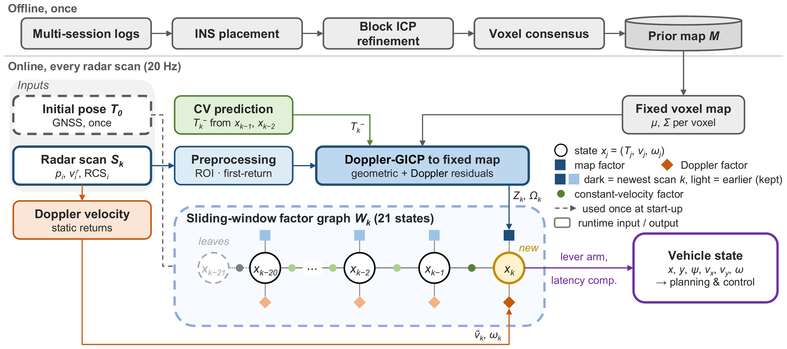
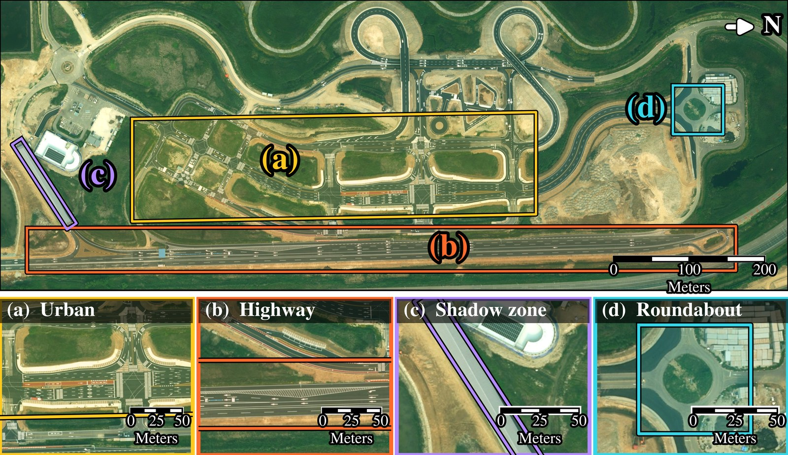

Abstract
Autonomous driving stacks fuse global navigation satellite system (GNSS), inertial, light detection and ranging (LiDAR), camera and radar measurements, so the loss of one sensor can disable the modules that depend on it and interrupt driving. LiDAR, cameras and GNSS depend on external conditions; inertial and wheel sensors observe only ego motion. Radar measures range and relative velocity in the conditions that disable them, and four-dimensional (4D) imaging radar has brought radar-only driving within reach. Prior work has validated radar-only perception, but radar-only localization has not been validated in closed loop on the road. This paper therefore proposes a degraded mode in which a single 4D radar operates the driving stack after other sensors fail. Perception switches to radar-only multi-object detection and tracking, and the vehicle state to a proposed radar-only localizer that matches scans to a fixed prior map and couples Doppler motion without inertial sensing. We validated the proposed localizer on a passenger car in closed loop: the car running the degraded mode completed seven road-type scenarios without intervention and continued driving through manually commanded transitions into degraded mode. The results are an empirical operational design domain assessment, not validated operating limits.
Method


Experiments
A drive-by-wire mid-size passenger car on public-road-type courses at K-City, with one forward-mounted ARS548 4D radar and a prior map built in separate sessions. A NovAtel OEM7 INS/GNSS is the reference; absolute accuracy was measured against its RTK-fixed solution as ground truth.

Driving outcomes
Seven evaluated road-type segments, then the two selected completed transitions. Speeds describe the tested envelope, not a validated limit.
| ID | Road type | Max.km/h | Dist.km | Outcome |
|---|---|---|---|---|
| S1 | Urban lane keeping | 50 | 0.44 | completed |
| S2 | Urban right turn | 27 | 0.10 | completed |
| S3 | Urban left turn | 27 | 0.13 | completed |
| S4 | Roundabout | 16 | 0.13 | completed |
| S5 | Highway | 78 | 0.67 | completed |
| S6 | GNSS shadow | 49 | 0.71 | completed |
| S7 | Composite segment | 100 | 4.06 | completed |
| S1 | Lane keeping (Run B) | 50 | 0.45 | completed |
| S6 | GNSS shadow (Run A) | 49 | 0.40 | completed |
Videos
Each clip shows the four camera angles and the car’s own RViz screen at once. Faces and the recorder’s burnt-in text are masked. The badges come from the log recorded alongside the footage.
The frame is edged and labelled in the mode the car is running in, so a transition shows as it happens: nominal mode – normal driving, nominal mode – sensor fault, degraded mode – radar-only driving, nominal mode – LiDAR baseline.
No recording matches this filter.
BibTeX
@inproceedings{radar_only_fail_operational,
title = {Radar-Only Fail-Operational Autonomous Driving:
Closed-Loop On-Road Validation with 4D Radar Localization},
author = {Anonymous},
booktitle = {Under review},
year = {2027}
}